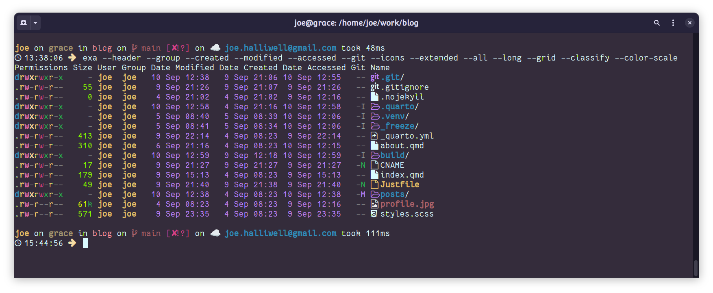
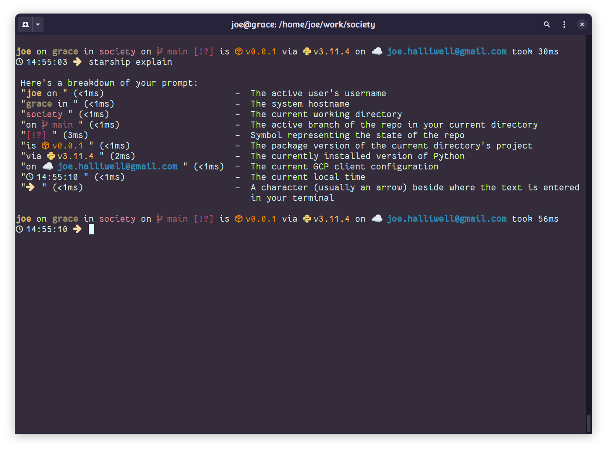
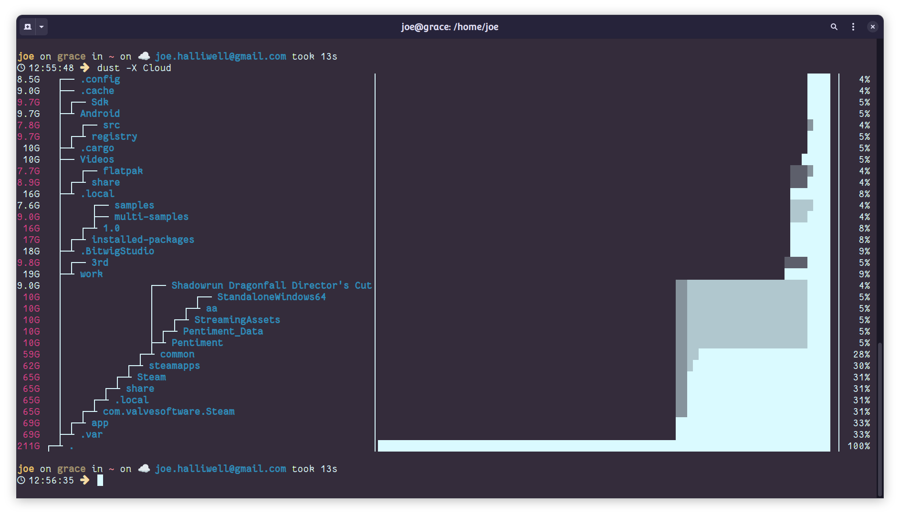
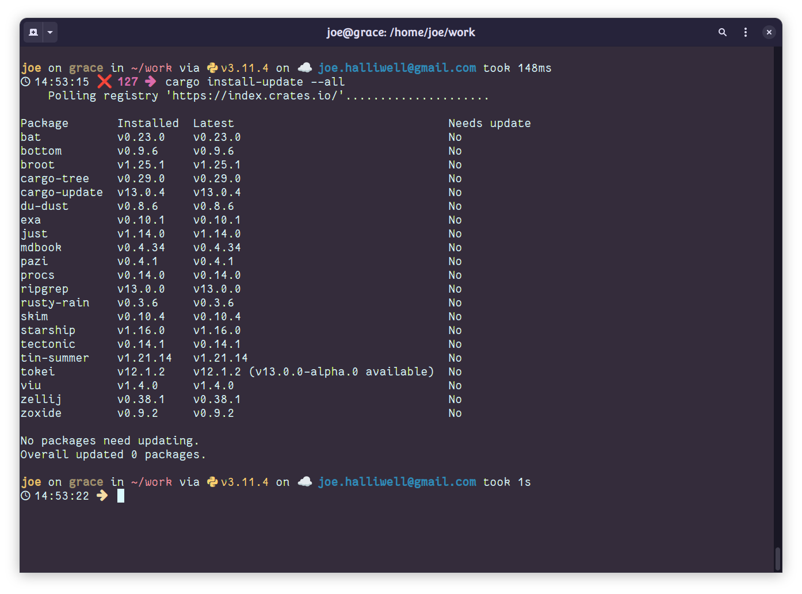

Many of the UNIX command line tools we use day-to-day date back to the earliest incarnations of UNIX at AT&T in 1970s. Of course, these days we’re mostly using GNU versions1, published under free software licenses and sporting various useful extensions.
1 There are many UNIXes that don’t use GNU tools, but… eh… I don’t use them.
However these don’t represent much of an evolution of the ancient tools, but rather a respectful effort to conserve them.
In the last decade, Rust, a modern systems programming language has begun to displace2 that other UNIX stalwart, the C programming language. It’s maybe not surprising then, that there are many excellent Rust alternatives to the hoary old GNU tools.
2 Why? Rust has a radical new approach to memory safety that promises to avoid large classes of vulnerability, first class support for threading, zero-cost abstractions for high performance, and built-in support for package management, formatting and unit-testing.
In my .bash_aliases, exa has now replaced ls, and cat has yielded to bat. Below, you’ll find six Rust-based command line tools that are now part of my every day carry.
Exa: ls with flair
exa is more or less a drop-in replacement for ls with sensible defaults like human-readable file sizes and colour-coding for different file types.
It has first-class support for creation/modification/access times and extended filesystem attributes. When integrated with git, exa even indicates the version control status of each file.
Also, if you’re using a nerd font it has icons. Everyone loves that.

exa showing more colour and detail than ls providesBat: colourful cat
cat is one of the oldest Unix utilities, dating back to Version 1 Unix. Yes, I nearly always have an editor open, yes less is more suited to long files, and yet I routinely find myself using cat to peek at files.
bat is a drop-in replacement that behaves like cat in scripts, but adds user-friendly paging, syntax highlighting, git integration and line numbers when outputting to a terminal. Much better.

Starship: fast and fancy prompt
Did you ever install some giant shell config framework just to get a cute prompt?
Starship is a cross-platform prompt, that takes its aesthetic cues and customizability from Zsh’s Spaceship prompt but eclipses it in raw speed. There’s never that clunky pause as hundreds of lines of script are executed just to generate your prompt.
Starship’s support for customization is inevitably somewhat limited. But its config is simple and declarative and eliminates the need for tweaking complex scripts and baroque environment variables.
The default setup looks great – but I’ve added extra nerdfont bling.

Dust: du but useful
If you’re using du you’re almost certaininly trying to figure out why you’ve run out of disk space. So you’re already annoyed, and it’s about to get worse.
du will give you raw data on file sizes to work with but you’re going to have to muck around with advanced flags and probably do some scripting to get your answer.
In contrast dust presents information in a visually intuitive tree structure, making it easy to see which files or directories are taking up space. It’s also faster.

npm install failureFd: find but usable
find is notorious for its arcane syntax and sluggishness on large filesystems. fd is a fast and user-friendly alternative whose simple syntax and smart defaults priortize common use cases without losing flexibility. And again it’s damn fast.
Cargo: install and update rust tools
If you’re interested in trying the above tools, it’s easy to get started with Rust.
The standard installer will give you a full set of dev tools including cargo, which is Rust’s package manager and swiss army knife.
Cargo can be used to install all of the programs above: a simple ‘cargo install $tool’ fetches, compiles, and places them on your path.
cargo-update is a cargo extension that detects outdated packages and updates them in one go. This keeps your toolset not just functional, but cutting-edge.

Closing thoughts
The Rust CLI tool ecosystem is flourishing. In this post, I covered some tools that I use every day, but there are tons of great Rust command line apps that I use less frequently3. You might also want to check out:
3 You can see some of these in the cargo install-update shot above
- bottom: cute, cross-platform system monitor
- broot: TUI filesystem navigator with sophisticated preview capabilities
- just: project-specific command runner &emdash; like
makebut without the baggage - ripgrep: fast content search with an intuitive interface
- tokei: fast alternative to
sloccountfor counting lines of code
Colophon
All screengrabs are from gnome terminal using the Wild Cherry theme from Gogh. The font is FantasqueSansMono NerdFont.